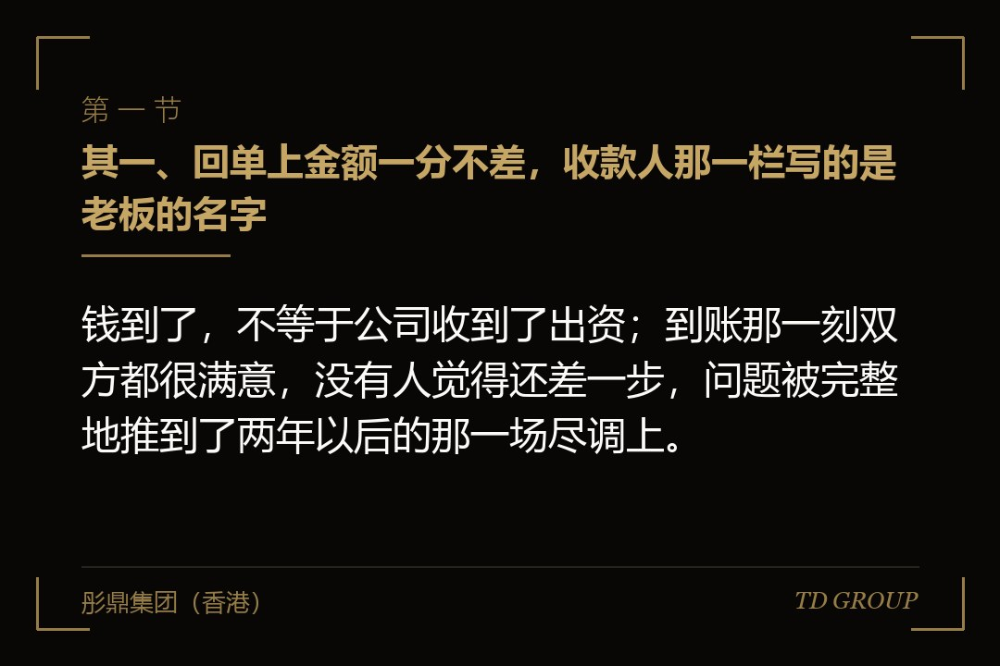
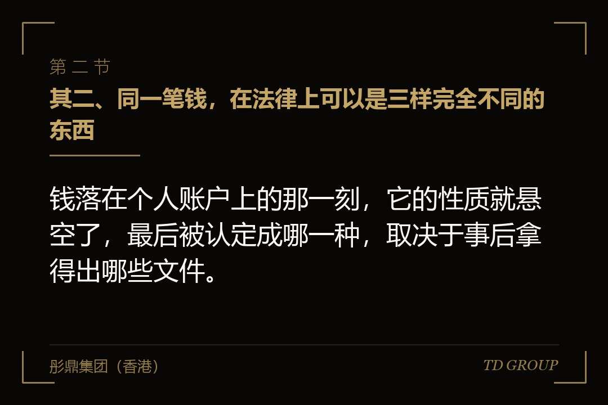
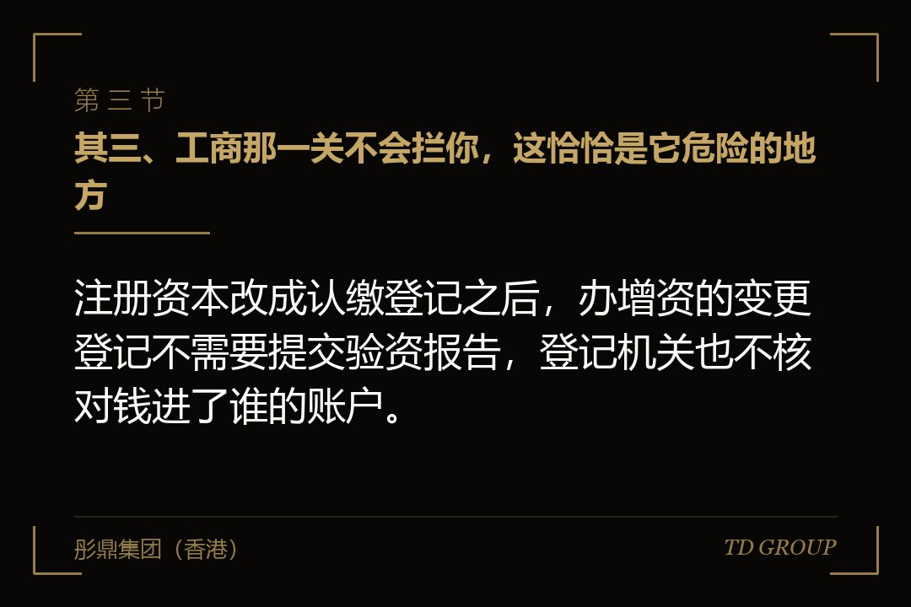

其一、回单上金额一分不差，收款人那一栏写的是老板的名字

结论先行：钱到了，不等于公司收到了出资；到账那一刻双方都很满意，没有人觉得还差一步，问题被完整地推到了两年以后的那一场尽调上。
假设有家做实验室通风柜的公司，两年前拿了一笔两千万的投资。签字那天下午，投资方的财务在群里问了一句收款账号，老板顺手报了自己那张卡。理由说出来也很实在：公司基本户那阵子因为一笔税务事项正被关注，他怕钱进去动不了，先放我这儿，用的时候再转出去。
钱当天就到了，金额一分不差。投资方拿到了签好字的增资协议，公司这边随后开了股东会、改了章程、交了变更登记的材料，营业执照上的注册资本变了，股东名册上多了投资方的名字。整个过程里没有任何一个环节提示这里还差一步。
这两年那笔钱确实花在公司身上。买了两台设备，垫了一笔工程款，最紧的那个月还发过一次工资。老板从自己卡上一笔一笔转出去，有的转进公司账户，有的直接付给了供应商。他心里记得清清楚楚，这笔钱一分没进自己口袋。
今年公司谈下一轮，尽调进场。中介开口要的就是近三年的对公流水，拿资产负债表上实收资本那一栏去对每一笔进账。两千万那一笔，流水里找不到。
老板把打款回单翻出来，金额、日期、付款人全对，收款人是他本人。中介看完说了一句话：这张回单能证明投资人付了钱，它证明不了公司收到了出资。在这一关，这两件事是分开算的。
其二、同一笔钱，在法律上可以是三样完全不同的东西

结论先行：钱落在个人账户上的那一刻，它的性质就悬空了，最后被认定成哪一种，取决于事后拿得出哪些文件。
认定一，投资人对老板个人的借款。对方打给个人，个人签收，两个自然人之间的资金往来是最省事的一种解释。这种认定下，公司一分钱出资没有收到，而老板个人背上了一笔需要偿还的债，两头都不占便宜。
认定二，老板代公司收取的款项。这是多数人心里的版本，也最接近事实。但它要成立，需要有东西证明「代收」这个安排在当时就存在：协议里写明的收款账户、双方的书面确认、款项后续进入公司的完整流水链条。这几样都没有，它就只是一句事后的说法。
认定三，一笔老股转让的对价。钱打给自然人股东、公司注册资本不变、公司账上不多一分钱——这个形态本身完全符合老股转让。问题在于双方签的是增资协议、工商也按增资办的变更，于是协议、登记和资金流向三样互相打架，将来任何一方都可以挑对自己有利的那一样来说话。
这一种还额外带一笔账。老股转让的价款属于个人所得，转让方要就财产转让所得申报纳税；一旦这笔款项被朝这个方向认定，多年前那次交易的税就成了一项摆在桌面上的欠账，而且要连着滞纳一起算。
三种认定的后果差得很远：一种是出资未到位，一种是补文件，一种是补税。而挑哪一种的权力不在企业这边，它在事后需要作出判断的那个人手里——可能是审计师，可能是投资方的律师，也可能是翻了脸的对方。
其三、工商那一关不会拦你，这恰恰是它危险的地方

结论先行：注册资本改成认缴登记之后，办增资的变更登记不需要提交验资报告，登记机关也不核对钱进了谁的账户。
二〇一四年注册资本登记制度改革之后，公司实收资本不再是登记事项，公司登记时也不再收取验资报告（少数特殊类型的公司除外）。所以一次增资的变更登记，看的就是股东会决议、修改后的章程、以及变更登记的申请材料这几样。
换句话说，钱有没有进公司账户，这件事在工商这一关根本不产生摩擦。决议签了、章程改了、材料交了，执照上的数字就变了。老板做完这一套，看到的是「全部办妥」，他没有任何理由觉得哪里还缺一环。
摩擦感为零，正是这个错误被反复重复的原因。人会对有阻力的事留个心眼，对一路绿灯的事不会；办得越顺，越不会有人回过头去问一句「这笔钱现在在谁的账户上」。
但另有一条规则一直在那儿：股东以货币出资的，应当把出资足额存入公司在银行开设的账户。这一条不是登记要求，它是出资义务本身的内容。登记机关不查，不等于它不成立；查它的是审计师、是尽调中介，是将来任何一个需要认定股东有没有履行出资义务的场合。
打个比方，登记像是检票。票检过了，说明你有资格进场，不说明你已经把场内该做的事做完了。检票口不会拦你，因为检票口本来就不管这个。
现行公司法还给有限责任公司的出资加了一条期限：股东认缴的出资，要在公司成立之日起五年内缴足。这意味着「钱先在个人卡上放着」这个状态本身是有保质期的，它不会因为没人提起就一直安稳地待着。
其四、尽调是怎么把它翻出来的：拿一栏数字去对一叠流水
结论先行：审计和尽调核对出资的办法很笨也很有效——把实收资本那一栏的每一次增加，逐笔到银行流水里去找对应的那笔进账。
这个动作说穿了就是两边对账。报表说公司在某年某月收到了两千万出资，那么公司账户那个月的流水里就应该有一笔两千万的进账，付款人是投资方，附言通常写着投资款或者增资款。对得上，这一项翻篇；对不上，就要解释。
解释可以是「钱先到了我个人账户，后来陆续转进公司的」。中介接着会要求：把个人账户对应期间的流水调出来，把每一笔转入公司的记录对上，把中间的时间差说清楚。到这一步，事情就从公司层面进到了个人层面，而个人账户里通常还有大量跟这件事无关、也不打算给别人看的内容。
这里有一道算术，任何一位企业主今天下午就能自己做一遍：打开公司的对公流水，把资产负债表上实收资本那一栏的每一次增加，逐笔去找对应的进账；把找不到对应进账的那部分金额加起来。这个数就是尽调那天你要拿文件去解释的金额。多数人做完这道题会发现，它不是零。
还有一个更容易被忽略的入口，在对方手里。投资方自己的财务凭证上，这笔付款的收款人写的是一个自然人的名字。将来对方要退出、要做自己的审计，或者双方谈崩了，这张凭证就是现成的东西，不需要谁去调查取证。
在华尔街彤鼎俱乐部的一次闭门交流里，有位做过好几轮融资的企业主说过一句话：融资真出问题的地方，多数不在谈判桌上，在打款那一天的一个细节上。
这件事最难办的一点是它不会被时间冲淡。流水会一直在，报表上那一栏也会一直在，年份拖得越久，要还原的中间环节越多，而当年经手的人可能已经走了。
其五、钱后来补进了公司，也可能补进了错的那一栏
结论先行：老板把钱从个人卡转进公司账户，如果账做成了往来款，报表上表达的意思是公司欠老板一笔钱，不是股东完成了出资。
这是补救环节里最常出现的一次走偏。转账确实发生了，公司账上也确实多了一笔钱，但会计上把它挂在了其他应付款或者股东借款下面。这两个科目属于负债，不属于权益。
后果有三层：公司的净资产不会因为这笔钱变多；股东的出资义务不会因为这笔钱被视为已经履行；账上还平白多了一笔股东与公司之间的资金往来，而关联方往来在尽调和上市审核里是另外一项要单独拉出来清理的东西。
假设有家做冷弯型钢的公司，情况就是这样。两年里老板陆续把钱转进公司，前后一千多万，财务图省事，全部记成了股东往来。尽调给出的结论是两句话：出资仍未到位，同时存在一笔上千万的股东借款。同一笔钱，被记成了两个方向都不利的东西。
往来款要转成出资，路径本身是有的：先确认这笔债权真实存在、金额清楚、双方没有争议，再开股东会作出决议，把债权转为对公司的出资，然后办变更登记。它办得下来，但要花时间、要材料，而且如果原始凭证不齐——哪些款项是替公司付的、付给了谁、有没有发票——这条路会卡在还原用途那一步。
顺带说一句：这笔钱进公司之后该怎么分栏记，哪一段对应注册资本、哪一段计入资本公积，是另一件要单独算的事。这里只强调一个先后——先把「它到底是不是出资」定下来，再谈它记在哪一栏。
其六、三种处境，要补的文件完全不一样
结论先行：钱还在卡上、钱花在了公司身上、钱花在了个人身上，这三种处境的补正难度是台阶式上升的，而它们经常混在同一笔款项里。
处境一，钱原封不动还在个人账户上。这一种最省事：把款项转入公司对公账户，附言写明用途，由公司出具收款确认；同时补一份三方书面说明，写清当初为什么由个人代收、代收期间款项处于什么状态、现已足额入资。再把股东会决议、章程修正案、出资证明书、股东名册这几样对齐。
处境二，钱已经花在公司经营上。要做的是还原：把每一笔支出的用途、收款方、发生时间、票据一笔笔找出来，证明它确实用于公司；然后在账上把「个人垫付」变成公司的成本或者资产，把老板与公司之间因此形成的债权确认下来，再走上一节说的那条转为出资的路。这一步的工作量取决于当年记账有多细，跟金额大小关系不大。
处境三，有一部分花在了个人身上。这一段没有技术解法，只能补现金。补进去之后，这段历史仍然会留在尽调清单上，通常会被写成一项已整改事项，需要企业说明发生原因、整改经过和后续的制度安排。
假设有家做电子衡器的公司，两千万里三种处境同时存在：八百万还躺在卡上，九百多万转进公司买了设备和原料，剩下的两百多万当年家里买房用掉了。三段钱要走三条不同的路，可它们在那张打款回单上是一笔。
这也是为什么「补一份说明就行了」这个想法通常不成立。一份说明只能覆盖一种处境，而实际发生的往往是三种混在一起，还得先把每一段拆开、各自对上金额，说明才写得出来。
其七、正确的收款路径，其实只有几行字
结论先行：这件事的正解不复杂，它在增资协议里就是几行字——钱汇到哪个户名、哪个账号、哪家银行，附言写什么，公司什么时候出具收款确认。
把收款账户在协议里写死。户名与营业执照上的公司名称完全一致，账号和开户行写全，不写「另行通知」。这一行字顺带还挡住了另一类麻烦：冒充财务在微信上改收款账号这种事，在有明文账户的协议下很难做成。
汇款附言写清用途，投资款、增资款、缴付出资款都行，重点是让这笔进账在流水里一眼就能对上。款到之后由公司出具收款确认，把它当作交割文件的一部分收进文件夹，而不是靠一句「收到了」在群里回一下。
款项进来之后按约定分成两段入账，对应注册资本的那一段与超出的那一段各归各位；再出具出资证明书、记载于股东名册、办理变更登记。这三份东西各管一段，谁也替不了谁，缺哪一份，将来查到的就是哪一段说不清楚。
如果确实需要个人先行收款——比如公司账户在某个时段真的用不了——那就把它变成一个书面安排：写明代收人是谁、为什么由他代收、款项在多少天之内转入公司账户、逾期怎么处理。这样它就从一个「事后要解释的事实」，变成了一个「当时就有文件的安排」，性质完全不同。
如果钱来自境外，路径另有一套讲究：外汇登记、专用账户、结汇用途，跟境内直接汇款不是一回事。这些要在签协议之前就问清楚，而不是等钱已经在路上了再回头补。
华尔街彤鼎俱乐部里流传过一句半开玩笑的话：一份增资协议里最值钱的，往往是写着银行账号的那三行。
所以这件事收口的时候，只有两个问题需要回答。那笔钱当年进的是公司账户，还是某个人的卡？如果是后者，你今天能拿出几份文件，把它是什么、后来去了哪儿、现在算不算出资，一句一句说清楚？答得上来，它在尽调里就是一段说明；答不上来，它就是一笔要重新走一遍的出资。